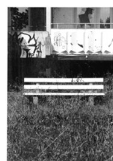

Fehhlerkultur Stendal Süd
2026

Leerstehende Plattenbauten, zugebaute
Einfahrten, verwucherte Gehwege und illegaler Müll, wo einst das Leben geblüht
hat: junge Familien, die sich über ihre erste eigene Wohnung freuten,
Arbeiter*innen, die täglich ins Kernkraftwerk pendelten, junge wie alte
Menschen, die auf kleinem Raum eine Gemeinschaft bildeten, bis dieser Ort nicht
mehr existierte Stendal-Süd. Heute geht man durch das zugewachsene
Stadtgebiet, als wäre es ein verwunschener Ort, an dem das Leben noch nicht
ganz aufgehört zu haben scheint und in dem noch so viele Geschichten und
Erinnerungen stecken. Wo sind diese Erinnerungen und wer sind die Menschen, die
sie geschaffen haben? Was passiert mit einem Ort, der noch existiert und nicht
mehr existiert, außer dass die Natur ihn nach und nach vereinnahmt? Was
passiert mit einem Land, in dem viele Menschen geboren und aufgewachsen sind,
dass es auf einen Schlag nicht mehr gab? Und was bleibt?
In der multimedialen Ausstellung mit
Fotografien, Malereien, Illustrationen, Stoff- und Medienkunst-Arbeiten gehen
vier junge Künstlerinnen und Künstler genau dieser Frage nach. In enger
Zusammenarbeit mit dem Stadtarchiv wurde von Hannah Klitzke ein Begleitbuch
erstellt, welches mit Zeitdokumenten und künstlerischen Arbeiten eine Symbiose
schafft zwischen Gestern, Heute und Morgen. Die Ausstellung soll dabei als ein
Raum der Begegnung und des Austauschs verstanden werden, welches sich
insbesondere im Begleitprogramm spiegelt: Am 18.04. wird es einen Vortrag zum
Thema KKW und Treuhand-Abwicklung in der 90ern geben mit Möglichkeit zum
Gespräch sowie am 25.04. einen Filmabend mit Screening des Films Mit der Faust
in die Welt schlagen, welcher sich um das Aufwachsen zweier junger Brüder im
Ostdeutschland der 2000er Jahre dreht, mit anschließendem Filmgespräch. Am
17.04. um 19 Uhr wird die Ausstellung eröffnet, mit musikalischer Begleitung
von Esther Koch.
Öffnungszeiten
Samstag
11:00 -19:00 Uhr
Sonntag
12:00-15:00 Uhr
Mittwoch-Freitag 16:00-19:00 Uhr
Ort: 39576 Stendal, Rathenower Straße
16B Am Sperlingsberg (vormals Spielzeugladen)